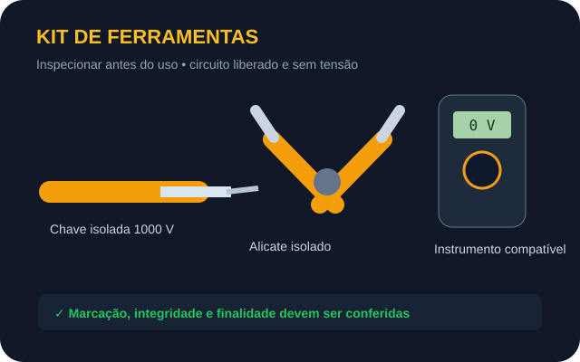
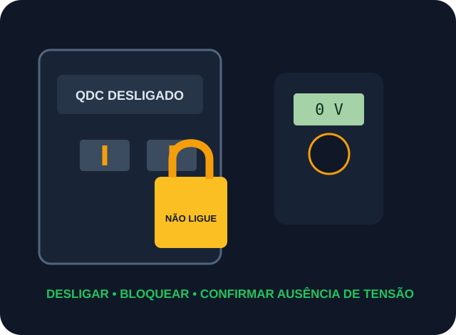
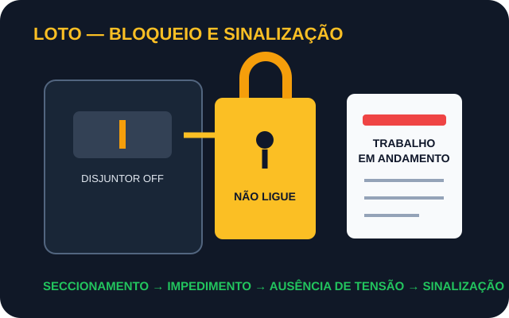
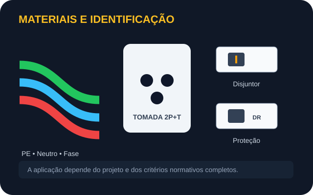
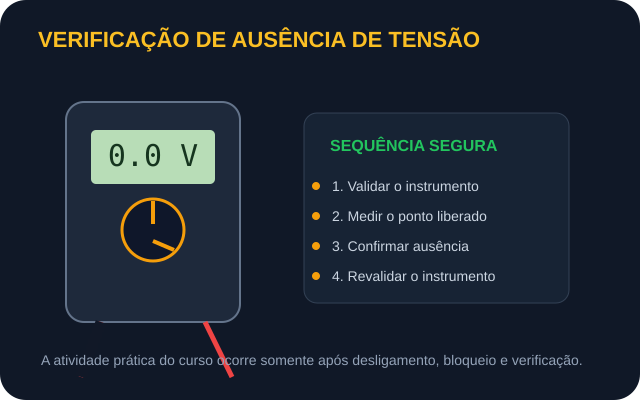

Ferramentas isoladas
Verifique integridade e finalidade. A ferramenta não substitui a desenergização.
Aprenda segurança, ferramentas, instalações residenciais e boas práticas com foco em desenergização, bloqueio e verificação antes de qualquer intervenção.

7 módulos progressivos, do fundamento à documentação do serviço.
Reconheça visualmente os itens que aparecem nos módulos.

Verifique integridade e finalidade. A ferramenta não substitui a desenergização.

Impedimento de reenergização e aviso visível durante o trabalho.

Condutores, tomadas e proteções devem seguir projeto e critérios aplicáveis.

A verificação confirma a liberação segura após desligamento e bloqueio.
Pesquisas orientadas no YouTube para complementar os módulos.
Busque conteúdos sobre NR-10, LOTO e segurança antes do contato.
Pesquisar vídeos →Veja demonstrações de inspeção de ferramentas e verificação segura.
Pesquisar vídeos →Componentes, montagem e boas práticas com circuito desligado.
Pesquisar vídeos →Etiquetagem de quadro, continuidade e diagrama unifilar básico.
Pesquisar vídeos →Antes de reproduzir qualquer procedimento demonstrado em vídeo, confirme se ele respeita desligamento, bloqueio, ausência de tensão e os limites do curso.
Uma trilha progressiva inspirada na organização usual de cursos livres profissionais.
Risco elétrico, bloqueio, instrumentos e reconhecimento de materiais.
Circuitos, proteções, montagem desenergizada, identificação e entrega.
Treinamento oficial aplicável, comandos elétricos e automação predial.
Esta trilha é orientativa e não representa parceria institucional. Para formação formal, consulte ofertas oficiais atualizadas de instituições reconhecidas.
Desenergização, bloqueio e boas práticas em cada etapa.
Escolha o modo visual mais confortável para estudar.
Pesquisas orientadas em vídeo para reforçar os módulos.
Projetado para estudar pelo celular.